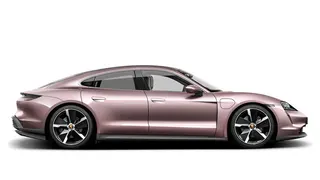
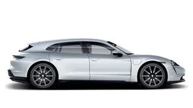

|
Taycan Model |
|
Modeli Porsche Taycan-a su:
| Taycan |
Taycan Cross Turismo Modeli |
Taycan Sport Turismo Modeli |
|  |
 |
 |
Porsche Taycan je električni sportski automobil koji je prvi put predstavljen 2019. godine. Taycan kombinira performanse i luksuz karakteristične za Porsche sa potpuno električnim pogonom. Dostupan je u nekoliko verzija, uključujući Taycan Turbo i Taycan Turbo S, koje pružaju izuzetno brze ubrzanja i impresivne domete. Taycan je takođe poznat po sofisticiranom dizajnu i visokoj kvaliteti unutrašnjosti, što ga čini privlačnim izborom za ljubitelje sportskih automobila i održive mobilnosti.